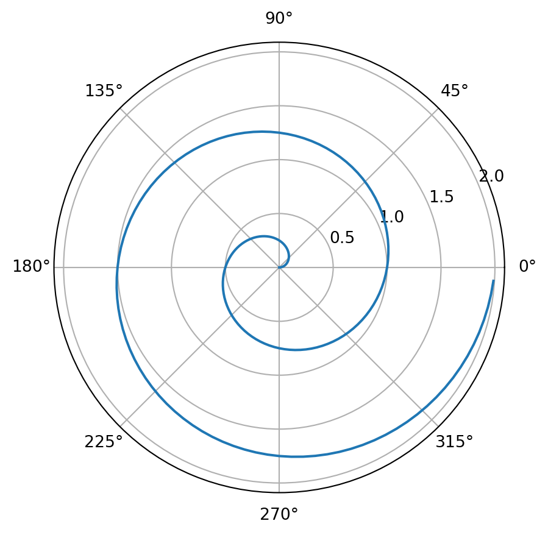

```{mermaid}
flowchart LR
A[Hard edge] --> B(Round edge)
B --> C{Decision}
C --> D[Result one]
C --> E[Result two]
```
flowchart LR
A[Hard edge] --> B(Round edge)
B --> C{Decision}
C --> D[Result one]
C --> E[Result two]
| Markdown Syntax | Output |
|---|---|
|
italics and bold |
|
superscript2 / subscript2 |
|
|
|
verbatim code |
|
|
| Markdown Syntax | Output |
|---|---|
|
Header 1 |
|
Header 2 |
|
Header 3 |
|
Header 4 |
|
Header 5 |
|
Header 6 |
| Markdown Syntax | Output |
|---|---|
|
https://quarto.org |
|
Quarto |
|
 |
|
|
|
|
|
|
| Markdown Syntax | Output |
|---|---|
|
|
|
|
|
|
|
continues after
|
|
|
Markdown Syntax
| Right | Left | Default | Center |
|------:|:-----|---------|:------:|
| 12 | 12 | 12 | 12 |
| 123 | 123 | 123 | 123 |
| 1 | 1 | 1 | 1 |Output
| Right | Left | Default | Center |
|---|---|---|---|
| 12 | 12 | 12 | 12 |
| 123 | 123 | 123 | 123 |
| 1 | 1 | 1 | 1 |
For tables produced by executable code cells, include a label with a tbl- prefix to make them cross-referenceable. For example:
```{python}
#| label: tbl-planets
#| tbl-cap: Planets
#| tbl-column: margin
from IPython.display import Markdown
from tabulate import tabulate
table = [["Sun",696000,1989100000],
["Earth",6371,5973.6],
["Moon",1737,73.5],
["Mars",3390,641.85]]
Markdown(tabulate(
table,
headers=["Planet","R (km)", "mass (x 10^29 kg)"]
))
```| Planet | R (km) | mass (x 10^29 kg) |
|---|---|---|
| Sun | 696000 | 1.9891e+09 |
| Earth | 6371 | 5973.6 |
| Moon | 1737 | 73.5 |
| Mars | 3390 | 641.85 |
Use ``` to delimit blocks of source code:
Use $ delimiters for inline math and $$ delimiters for display math. For example:
| Markdown Syntax | Output |
|---|---|
|
inline math: \(E=mc^{2}\) |
|
display math: \[E = mc^{2}\] |
Quarto has native support for embedding Mermaid and Graphviz diagrams. This enables you to create flowcharts, sequence diagrams, state diagrams, gnatt charts, and more using a plain text syntax inspired by markdown.
For example, here we embed a flowchart created using Mermaid:
You can include videos in documents using the {{< video >}} shortcode. For example, here we embed a YouTube video:
Videos can refer to video files (e.g. MPEG) or can be links to videos published on YouTube, Vimeo, or BrightCove.
The pagebreak shortcode enables you to insert a native pagebreak into a document (.e.g in LaTeX this would be a \newpage, in MS Word a docx-native pagebreak, in HTML a page-break-after: always CSS directive, etc.):
Native pagebreaks are supported for HTML, LaTeX, Context, MS Word, Open Document, and ePub (for other formats a form-feed character \f is inserted).
Note that there are five types of callouts, including note, tip, warning, caution, and important. There are 3 different styles simple,minimal,default.
For a demonstration of a line plot on a polar axis, see Figure 1.

To include executable expressions within markdown in a Python notebook, you use IPython.display.Markdown to dynamically generate markdown from within an ordinary code cell. For example, if we have a variable radius we can use it within markdown as follows: